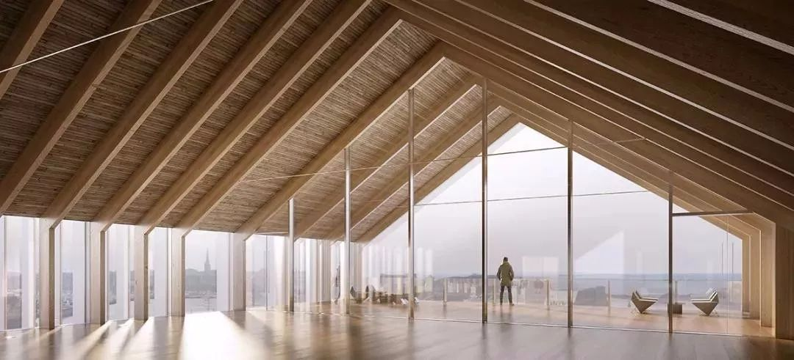
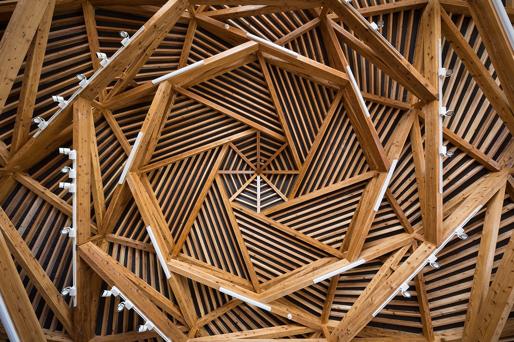
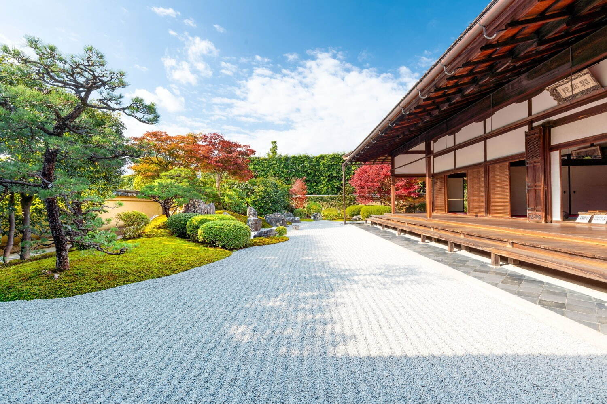
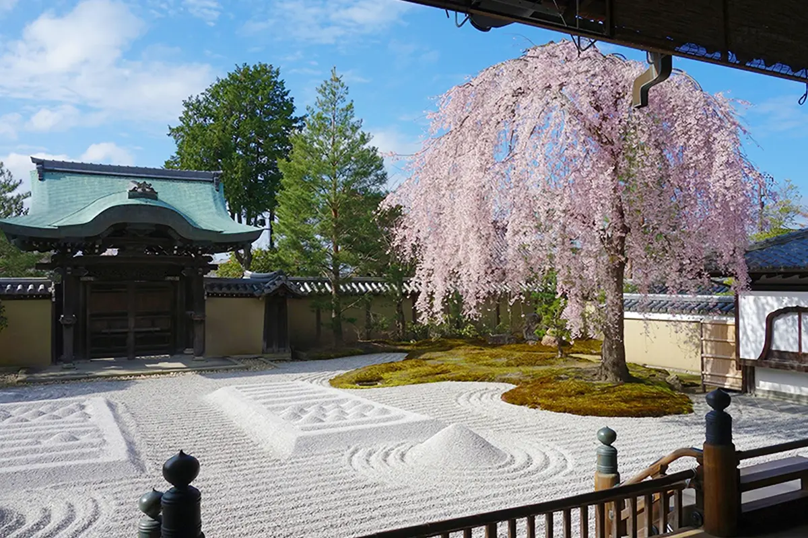

- Japan has many mountains and forests, and has long been an environment
rich in forest resources.
Wood has the ability to absorb and release moisture to maintain a
constant humidity level.
Because it allows people to live comfortably even in Japan's hot and
humid climate,
it has long been chosen as a structure that suits the climate.


- The old temples are made of tiles and are famous for their beautiful
gardens.
A characteristic of Japanese gardens is that they incorporate natural
objects
such as stones and plants, and are asymmetrically constructed with
curved shapes.